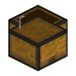

安装
贡献值模组安装在 Fabric 服务端。客户端可选装同一份模组，以使用专用界面和内置外观。
运行环境要求
| 组件 | 要求 |
|---|---|
| 服务端 | Minecraft Java 版 26.3 |
| Java | 25 |
| Fabric Loader | 0.19.5 或更高的兼容版本 |
| Fabric API | 与 26.3 匹配的版本（当前记录为 0.161.0+26.3） |
| 数据库 | 无需另装。单服/单人游戏自动使用世界内嵌入式 H2；群组服需 MySQL 8.4 长期支持版 |
服务端安装
 安装环境Minecraft、Java 和 Fabric
安装环境Minecraft、Java 和 Fabric
放入模组文件服务端 mods 目录 进入服务器客户端模组可选
进入服务器客户端模组可选
- 取得构建产物
code/build/libs/CSU-YSU-contribution-system-<版本>.jar。 - 把该模组文件与匹配版本的 Fabric API 放进服务端
mods/目录。 - 启动服务器。单人游戏和单服会自动在世界目录建立嵌入式数据库（
<世界>/contribution/contribution.mv.db），无需安装数据库服务。 - 进服后输入
/contribution打开贡献值界面，/stock打开股票市场，/shop打开商店。
所有玩法定义（配方、进度、装备、行业标签、事件映射）都位于模组模组文件的 data/contribution/，作为 Fabric 的默认模组数据包在启动/进入存档时加载，不需要安装独立数据包，也不需要手工 /reload。
客户端安装（可选）
客户端模组是完全可选的。未安装的玩家使用 Minecraft 26.3 原版对话界面，功能与服务端校验完全一致；安装同一份模组文件后，贡献值、股票与商店会使用专用的像素绘制界面。所有命令在两套界面下都可用。
已安装客户端模组时，可用 /contribution ui_vanilla、/stock ui_vanilla、/shop ui_vanilla 强制回到原版对话界面，用来复现未安装客户端玩家的体验。重新输入对应的主命令即可恢复自动选择。
单服与群组服
| 部署形态 | 数据库 | 主服务器 | 本地 contribution/ 目录 |
|---|---|---|---|
| 单人游戏 / 单服 | 世界文件夹内的嵌入式 H2 | 该服务器自身 | 账户、流水、建设度与统计恢复日志 |
| 群组服 | 所有子服连接的同一个 MySQL 8.4 | 生存服（mainServer=true），不设置大厅服 | 只存本地统计恢复日志 |
切换数据库不会迁移数据H2 与 MySQL 之间不会自动同步，切换数据库模式也不会搬迁旧数据。必须另行备份与迁移。
版本提示
客户端进服时比较双方模组和 Minecraft 版本。版本不同会在聊天栏显示双方版本及更新方向，连接继续保持。群组服各节点使用一致版本。
版本通知兼容
版本信息仅在进服时通知可接收的客户端。旧客户端可通过聊天收到更新提示；旧服务端未提供版本载荷时，版本比对以管理员部署记录为准。
构建与验证
本地构建流程
cd code
.\run-gradle.ps1 build --offline构建会自动执行资源校验（数据定义可解析、45 个玩家标签互斥、可逆合成排除）、账户查询、距离换算、股票与奖励事务、原版对话界面编解码与嵌入式数据库回归。构建成功后会刷新文档产物，并把模组文件安装到配置好的本地客户端/服务端目录。
验证范围、结果与未覆盖的边界记录在 code/docs/VALIDATION.md 与 code/docs/STOCK_VALIDATION.md：自动化构建与服务端测试不能替代真实客户端的逐项鼠标与视觉验收。